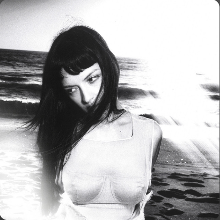

Nobody New
THE MARÍAS
0:003:35
🔉
HTML made by SrYor
Every day, I wake up missing youCada día, me despierto extrañándote
Wishing that I were to beDeseando estar
In your bed, by your sideEn tu cama, a tu lado
Tell me that you'll wait for me, patientlyDime que me esperarás con paciencia
No one else taking all my timeNo hay nadie más quitándome el tiempo
Holding out for youEsperando por ti
Baby, I promiseCariño, te lo prometo
There's nobody newNo hay nadie nuevo
I'm being honestTe soy sincera
There's no one like youNo hay nadie como tú
Baby, I promise (I could tell you, but it wouldn't be right)Cariño, te lo prometo (podría decírtelo, pero no estaría bien)
Nadie como tú (We cried together when we said our goodbyes)Nadie como tú (lloramos juntos cuando nos despedimos)
Yes, I'm being honest (I'd like to hold you, God, I wish we could talk)Sí, te soy sincera (quisiera abrazarte, Dios mío, ojalá pudiéramos hablar)
There's no one like you (Down by the water where we used to get lost)No hay nadie como tú (allá junto al agua, donde solíamos perdernos)
Aquí estoy otra vez sin tu amorAquí estoy otra vez sin tu amor
Siento que me cuesta ya respirarSiento que me cuesta ya respirar
¿Qué más da? Si no puedo olvidarme de ti¿Qué más da, si no puedo olvidarme de ti?
Pido a Dios que me haga felizPido a Dios que me haga feliz
Sin tenerte a tiSin tenerte a ti
Baby, I promiseCariño, te lo prometo
There's nobody newNo hay nadie nuevo
I'm being honestTe soy sincera
There's no one like youNo hay nadie como tú
Baby, I promise (I could tell you, but it wouldn't be right)Cariño, te lo prometo (podría decírtelo, pero no estaría bien)
Nadie como tú (We cried together when we said our goodbyes)Nadie como tú (lloramos juntos cuando nos despedimos)
Yes, I'm being honest (I'd like to hold you, God, I wish we could talk)Sí, te soy sincera (quisiera abrazarte, Dios mío, ojalá pudiéramos hablar)
There's no one like you (Down by the water where we used to get lost)No hay nadie como tú (allá junto al agua, donde solíamos perdernos)